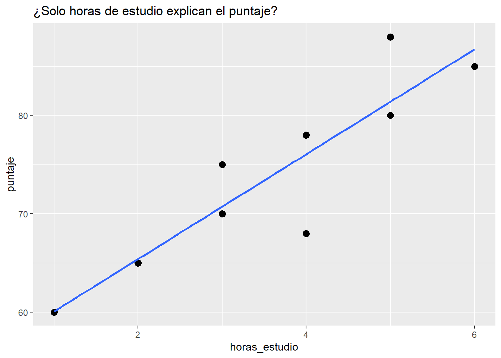
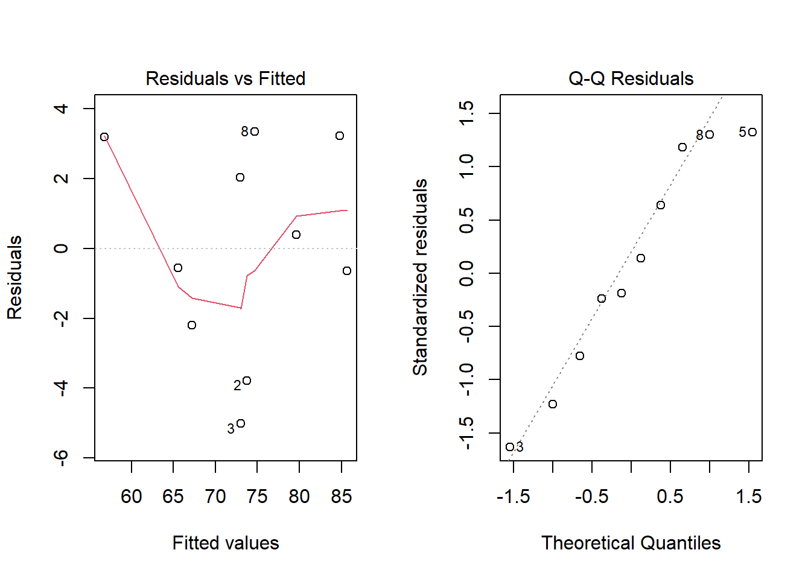
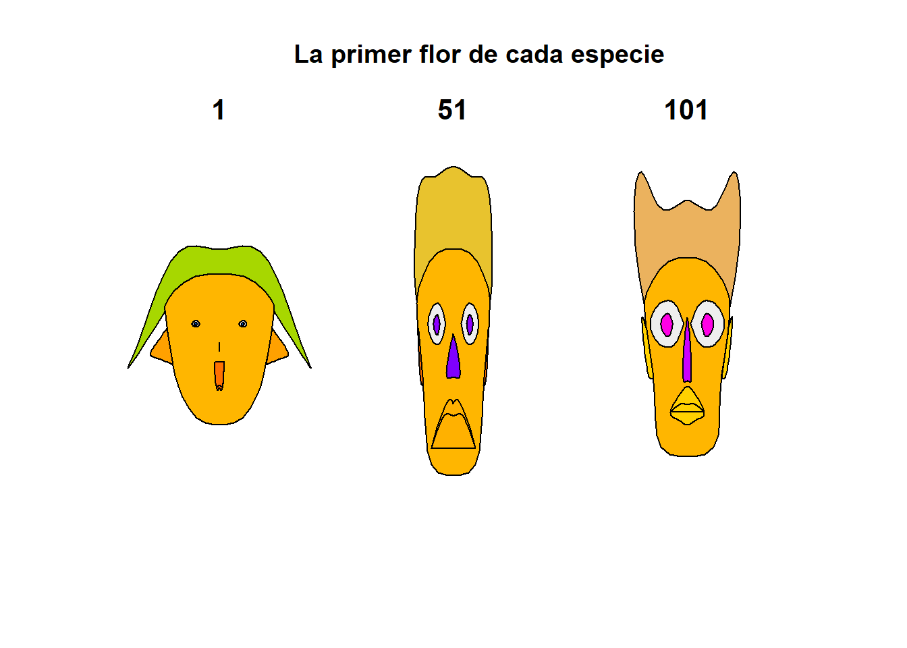

Sección 2 Regresión múltiple
2.1 ¿Por qué estadística multivariada?
El proceso de modelado consiste en construir expresiones matemáticas que permitan representar el comportamiento de una variable que queremos estudiar. Cuando contamos con varias variables, suele interesarnos analizar cómo unas influyen sobre otras, determinando si existe una relación, su intensidad y su forma. En muchos casos, estas relaciones pueden ser complejas y difíciles de describir directamente; por ello, se busca aproximarlas mediante funciones matemáticas sencillas como polinomios, que conserven los elementos esenciales para explicar el fenómeno de interés.
Cuando estudiamos fenómenos deterministas, es común vincular una variable dependiente con una o más variables independientes. Por ejemplo, en la ecuación de la velocidad (\(v=d/t\)), la distancia depende de la velocidad y del tiempo. En la práctica, cuando realizamos distintos experimentos, las fórmulas deterministas podrían no capturar por completo el comportamiento observado. Esto puede deberse a factores no controlados, a la presencia de variabilidad natural o a efectos aleatorios. Por esta razón, además de la parte determinista del modelo, se incorpora un término que represente la discrepancia aleatoria entre lo que se predice y lo que efectivamente se observa. De forma general, esta idea se resume como:
\[Observación = Modelo \ + \ Error\]
Cuando se supone que la relación entre las variables puede representarse mediante una ecuación lineal, hablamos de análisis de regresión lineal. Si intervienen únicamente dos variables, una dependiente \(y\) y independiente \(x\), se trata de regresión lineal simple. En cambio, cuando la variable de interés \(y\) depende de dos o más variables independientes \(x_1,x_2, ...\) hablamos de regresión lineal múltiple.
Supongamos que queremos predecir el rendimiento académico de un estudiante, ¿solo necesitamos las horas que estudia?
En este caso se tiene que el puntaje o rendimiento lo podemos representar con \(y\) y las horas de estudio con \(x\). Entonces esta propuesta de modelo, la podríamos representar como:
\[y=\beta_0+\beta_1x\] Donde \(\beta_0\) es la ordenada al origen y \(\beta_1\) la pendiente. Esta recta podría no ajustarse al modelo por diferentes razones, entonces lo que se hace es considerar un error aleatorio \(\epsilon\). El modelo que ya considera este error se representa como:
\[y=\beta_0+\beta_1x+\epsilon.\]
A este modelo se le conoce como modelo de regresión lineal simple y a \(\beta_0,\beta_1\) se les conoce como coeficientes de regresión.
En problemas reales, casi nunca una sola variable explica el fenómeno. Las decisiones y predicciones mejoran cuando integramos múltiples fuentes de información.
Ejemplos: - Salud: riesgo de una enfermedad según edad, IMC, actividad física, dieta y antecedentes. - Ingeniería: vida útil de una pieza según temperatura, vibración, material y carga. - Biología: crecimiento de una planta por agua, luz, fertilizante, temperatura.
Ejemplo: Si queremos predecir el rendimiento académico de un estudiante, ¿solo necesitamos las horas que estudia? ¿qué otras variables podrían influir en el puntaje de un examen?
Rendimiento escolar
set.seed(123)
n <- 10
data_intro <- tibble(
estudiante = paste0("E", 1:n),
horas_estudio = c(2,3,4,5,1,3,2,4,5,6),
horas_sueno = c(7,8,6,7,5,8,7,6,9,7),
asistencia = c(0.9,0.95,0.8,0.85,0.7,0.9,0.8,0.9,1,0.95),
puntaje = c(65,70,68,80,60,75,65,78,88,85)
)
data_intro## # A tibble: 10 × 5
## estudiante horas_estudio horas_sueno asistencia puntaje
## <chr> <dbl> <dbl> <dbl> <dbl>
## 1 E1 2 7 0.9 65
## 2 E2 3 8 0.95 70
## 3 E3 4 6 0.8 68
## 4 E4 5 7 0.85 80
## 5 E5 1 5 0.7 60
## 6 E6 3 8 0.9 75
## 7 E7 2 7 0.8 65
## 8 E8 4 6 0.9 78
## 9 E9 5 9 1 88
## 10 E10 6 7 0.95 85¿Qué pasa si solo graficamos horas de estudio vs puntaje?
Plot hotas de estudio vs puntaje sugerida
library(ggplot2)
ggplot(data_intro, aes(horas_estudio, puntaje)) +
geom_point(size=3) +
geom_smooth(method="lm", se=FALSE) +
labs(title="¿Solo horas de estudio explican el puntaje?")## `geom_smooth()` using formula = 'y ~ x'
¿Se ajusta un modelo lineal? ¿Porqué?
2.1.1 ¿Qué es “multivariado” y por qué lo necesitamos?
Idea central: cuando varias \(x\) influyen sobre \(y\), estudiar cada \(x\) por separado puede engañarnos. El análisis multivariado permite:
- Aislar efectos: estimar el efecto de \(x_1\) manteniendo constantes \(x_2,x_3,...\).
- Mejorar predicción: reducir error al añadir información relevante.
- Controlar confusores: variables que cambian la relación aparente entre \(y\) y \(x\).
Ejemplo: Si ajustamos ahora un modelo con varias variables, ¿vamos a observar un cambio? ¿se ajustará mejor?
Código (modelos + comparaciones)
# Modelo simple
m1 <- lm(puntaje ~ horas_estudio, data = data_intro)
# Modelo múltiple
m2 <- lm(puntaje ~ horas_estudio + horas_sueno + asistencia, data = data_intro)
# Medidas clave
R2_m1 <- glance(m1)$r.squared
R2_m2 <- glance(m2)$r.squared
print(paste("El R2 del modelo simple:", R2_m1))## [1] "El R2 del modelo simple: 0.824317362184441"## [1] "El R2 del modelo multiple: 0.895428180549875"- ¿Aumentó \(R^2\) al incluir más variables? ¿Por qué tiende a subir?
- ¿Qué cambia en la interpretación de horas_estudio al controlar por horas_sueno y asistencia?
- ¿Puede un predictor ser importante en bivariado y no en multivariado (o viceversa)?
2.2 Regresión múltiple
2.2.1 Modelo y estimación
Los modelos en regresión lineal múltiple están dados por la siguiente forma, donde \(y\) depende de \(p\) variables predictoras:
\[y_i=\beta_0+\beta_1x_{i1}+\beta_2x_{i2} + \beta_px_{ip}+\epsilon_i.\]
Se suele asumir que los errores \(\epsilon_i\) son i.i.d. con distribución normal de media 0 y varianza \(\sigma^2\) desconocida. Los coeficientes \(\beta_i\) son constantes desconocidas y son los parámetros del modelo. Cada \(\beta_j\) representa el cambio esperado en la respuesta \(y\) por el cambio unitario en \(x_i\) cuando todas las demás variables independientes \(x_i(i\neq j)\) se mantienen constantes.
Los coeficientes los podemos interpretar como sigue:
- Intercepto (\(\beta_0\)): valor esperado de \(y\) cuando todas las \(x\)=0.
- Pendiente \(\beta_j\): efecto parcial de \(x_j\) sobre \(y\) manteniendo las demás constantes.
En los modelos de regreción lineal, solemos usar las siguientes medidas de bondad de ajuste:
- \(R^2\): proporción de varianza de \(y\) explicada.
- \(R^2\) ajustado: penaliza por número de predictores (mejor para comparar modelos con distinto número de x).
- RMSE (\(\sigma\)): error típico de predicción en unidades de \(y\).
comp <- dplyr::bind_rows(
glance(m1) %>% mutate(modelo="simple"),
glance(m2) %>% mutate(modelo="multiple")
) %>% select(modelo, r.squared, adj.r.squared)
comp## # A tibble: 2 × 3
## modelo r.squared adj.r.squared
## <chr> <dbl> <dbl>
## 1 simple 0.824 0.802
## 2 multiple 0.895 0.843Para este modelo algunos de los supuestos se siguen del modelo de regresión lineal simple y se agregan algunos que tienen que ver con la relación que pudiera existir entre las variables regresoras.
- El modelo es lineal en los parámetros.
Chequeo: residuales vs ajustados sin patrón claro. - El modelo está especificado correctamente.
- Covarianza cero entre variables regresoras y el error.
- Esperanza del error igual a cero.
- Homocedasticidad.
- No autocorrelación entre los errores.
- Los errores siguen una distribución normal.
- Mas observaciones que parámetros a estimar.
- Variación entre los valores de las variables regresoras.
- No colinealidad (multicolinealidad) entre las variables regresoras, es decir, no existe una relación lineal entre \(x_i\) y \(x_j\) (es decir, las variables son linealmente independientes).
Supuestos
# Modelo m2
par(mfrow=c(1,2))
plot(m2, which=1) # Residuales vs ajustados
plot(m2, which=2) # QQ-plot
Ejercicio: Supongamos que tenemos los siguientes datos: precio de vivienda según metros, habitaciones y distancia al centro.
Dataset
set.seed(42)
n <- 14
casas <- tibble::tibble(
precio = c(200,220,250,275,300,180,210,260,280,320,190,240,230,305),
metros = c(80,90,100,110,120,70,85,105,115,130,75,95,92,125),
habitaciones = c(2,3,3,4,4,2,3,3,4,5,2,3,3,4),
distancia_centro = c(5,4,6,3,2,8,6,3,2,1,7,5,4,2)
)
casas## # A tibble: 14 × 4
## precio metros habitaciones distancia_centro
## <dbl> <dbl> <dbl> <dbl>
## 1 200 80 2 5
## 2 220 90 3 4
## 3 250 100 3 6
## 4 275 110 4 3
## 5 300 120 4 2
## 6 180 70 2 8
## 7 210 85 3 6
## 8 260 105 3 3
## 9 280 115 4 2
## 10 320 130 5 1
## 11 190 75 2 7
## 12 240 95 3 5
## 13 230 92 3 4
## 14 305 125 4 2- Ajusta
precio ~ metros(simple) yprecio ~ metros + habitaciones + distancia_centro(múltiple).
- Compara \(R^2\), \(R^2\) ajustado y σ (RMSE).
- Interpreta el coeficiente de
distancia_centro.
- Revisa QQ-plot y residuales vs ajustados. ¿Algún patrón?
Solución
m_s <- lm(precio ~ metros, data=casas)
m_m <- lm(precio ~ metros + habitaciones + distancia_centro, data=casas)
broom::glance(m_s)[,c("r.squared","adj.r.squared")]## # A tibble: 1 × 2
## r.squared adj.r.squared
## <dbl> <dbl>
## 1 0.996 0.996## # A tibble: 1 × 2
## r.squared adj.r.squared
## <dbl> <dbl>
## 1 0.997 0.996## # A tibble: 4 × 5
## term estimate std.error statistic p.value
## <chr> <dbl> <dbl> <dbl> <dbl>
## 1 (Intercept) -8.67 14.9 -0.583 0.573
## 2 metros 2.53 0.162 15.6 0.0000000236
## 3 habitaciones -0.505 2.80 -0.180 0.861
## 4 distancia_centro 1.38 0.974 1.42 0.187